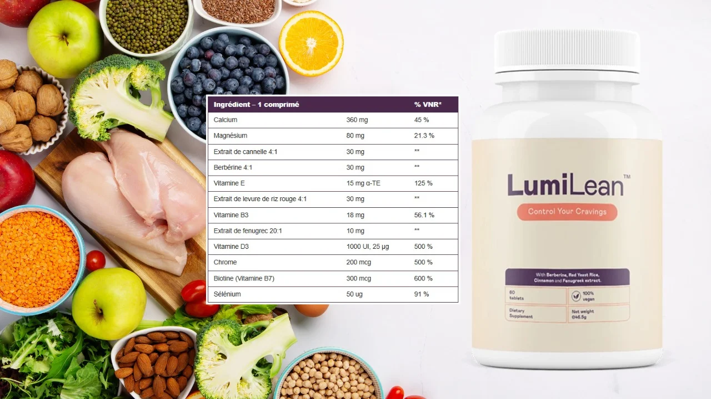

LumiLean est un supplément nutritionnel formulé pour favoriser l'équilibre des niveaux de sucre dans le sang.
En s’appuyant sur un mélange spécifique d’ingrédients naturels, il contribue au bon fonctionnement du métabolisme, aide à contrôler les envies alimentaires
et optimise l’utilisation de l’énergie. Ce produit s’adresse à ceux qui souhaitent mieux maîtriser leur glycémie tout en soutenant la perte de poids par la combustion des graisses.
Ingrédients

LumiLean est formulé avec des ingrédients puissants tels que:
Berbérine : Aide à la gestion du métabolisme et à la réduction des graisses.
Extrait de cannelle : Soutient la régulation de la glycémie et améliore la digestion.
Fenugrec : Favorise la satiété et réduit les envies de nourriture.
Calcium, Magnésium, Vitamine E, Vitamine D3, Vitamine B3, Biotine, Sélénium, et Chrome: Ces vitamines et minéraux essentiels soutiennent divers processus physiologiques pour améliorer le bien-être global.
Fortement conseillé :
LumiLean est un complément alimentaire développé pour aider à gérer le poids et stabiliser les niveaux de sucre dans le sang. Sa composition, élaborée à partir d’ingrédients naturels soigneusement sélectionnés, procure de nombreux bienfaits pour ceux qui souhaitent optimiser leur santé globale. Découvrez pourquoi LumiLean est un choix judicieux:
Idéal pour les personnes désirant modérer leur appétit.
Contribue à maintenir un taux de sucre sanguin équilibré.
Soutient efficacement le fonctionnement du métabolisme.
Aide à renforcer le bien-être général.
Offre des résultats optimaux lorsqu’il est associé à une alimentation saine et une activité physique régulière.
Bénéfices de l’utilisation de LumiLean:
LumiLean aide à:
Maintenir un équilibre stable des niveaux de sucre dans le sang.
Diminuer les envies alimentaires et favoriser une sensation de satiété durable.
Encourager la dégradation des graisses et faciliter la gestion du poids.
Soutenir une digestion optimale et améliorer l’assimilation des nutriments essentiels.